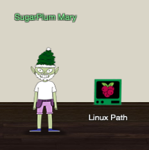
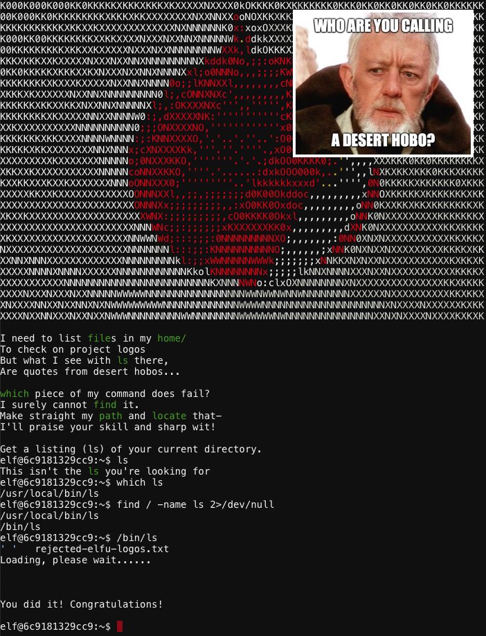

SugarPlum Mary - Linux Path#

Objective: Determine Attacker Technique
Request#
Oh me oh my - I need some help!
I need to review some files in my Linux terminal, but I can't get a file listing.
I know the command is ls, but it's really acting up.
Do you think you could help me out? As you work on this, think about these questions:1. Do the words in green have special significance?
2. How can I find a file with a specific name?
3. What happens if there are multiple executables with the same name in my $PATH?
Video#
Resources#
- "Green words matter, files must be found, and the terminal's $PATH matters."
Solution#

When running a command without specifying the full path, the OS uses the list of paths stored in the $PATH environment variable to determine where the OS should look for executables. If multiple executables share the same name, the first binary that's found in the user's $PATH is the one that will be executed.
- Use
which lsto show the binary that's executed by default - Use
find / -iname ls 2>/dev/nullto search for any files matching the name 'ls' (and suppress errors). - The wrong
/usr/local/bin/lsbinary appears to be taking precedence over/bin/ls. - Simply run
/bin/lsto solve the objective.
Answer#
Execute /bin/ls.
Hint#
Oh me oh my - I need some help!
Oh there they are! Now I can delete them. Thanks!
Have you tried the Sysmon and EQL challenge?
If you aren't familiar with Sysmon, Carlos Perez has some great info about it.
Haven't heard of the Event Query Language?
Check out some of Ross Wolf's work on EQL or that blog post by Josh Wright in your badge.